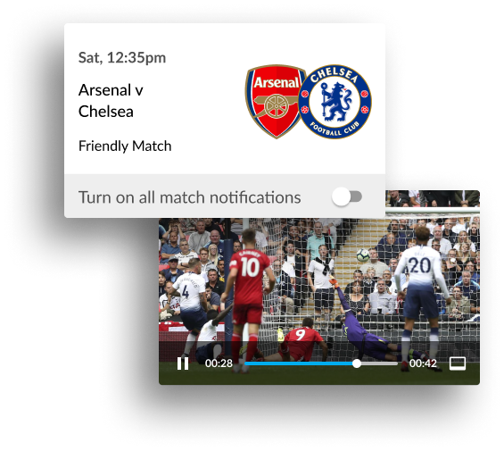

WHAT IT DOES
An Enhanced Football Experience
The Guardian Live Scores app is your go to app for live scores and watching Premier League goals… Get in there, what a result!
As well as videos of all the goals, you can watch match highlights, check out the latest scores and results and stay bang-up-to-date with the big football stories from The Guardian publication.
Learn more